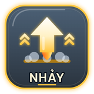
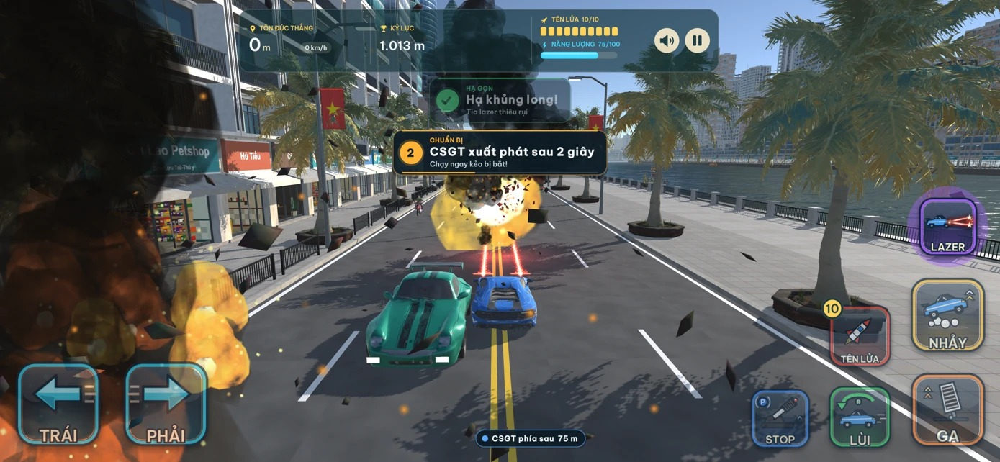
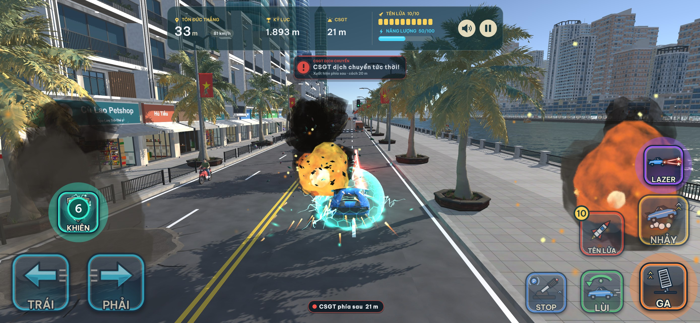

Xoay ngang để chơi
Xoay điện thoại hoặc máy tính bảng sang ngang để vào phố.
BẢN ĐỒ MỞ · SÀI GÒN
LÁI XE QUA PHỐ QUEN.
Trốn CSGT. Tiêu diệt khủng long, xe tăng, trực thăng, tàu trên bản đồ. Cầm lái xe đua xanh chạy tự do khắp phố ven sông, chợ và cầu, phá kỷ lục quãng đường.
Chơi miễn phí · Máy tính & điện thoại
ĐIỀU KHIỂN




Xoay ngang để chơi. Giữ TRÁI / PHẢI để lái · GA · LÙI · P/DRIFT bên phải · NHẢY, TÊN LỬA, LAZER hàng trên · KHIÊN trên hai nút lái.
←→WASD LÁIJ NHẢYF TÊN LỬAL LAZERK KHIÊNSPACE PHANH TAYP TẠM DỪNG
MỚI Bản cập nhật — · 23/11/2026
- Game đổi tên thành GờTa Việt (cả tên khi thêm vào màn hình chính / cài trên iPhone, Android, máy tính).
- Thanh trên gọn hơn: chỉ còn nút Tải game, bấm vào xem cách cài game và chơi offline.
- Tiêu đề «PHỐ QUEN» hiện rõ dấu sắc.
ẢNH TRONG GAME


